Landen die we hebben bezocht
Op 3 April 2021 begon het 68 daagse avontuur op station Schiphol. Op deze pagina zal ik vertellen wat we hebben gedaan in de verschillende landen waar we zijn geweeest. De volgende landen hebben we bezocht:
Frankrijk
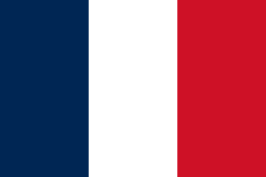
Op 3 april kwamen we aan op onze eerste bestemming. Dit was Parijs. Hier hadden we als enige van tevoren een slaapplek geboekt in een hotel. In totaal zijn we drie dagen in Parijs geweest waarvan we elke nacht op een andere plek sliepen. We hebben zo goed als de hele stad verkend. De bezienswaardigheden die we hebben gezien zijn: de Eiffeltoren, het Louvre, de Arc de Triomphe, de Notre-Dame, Dome des Invalides en de Sacre Coeur. Ook hebben we een voetbalwedstrijd van Paris Saint Germain gezien.
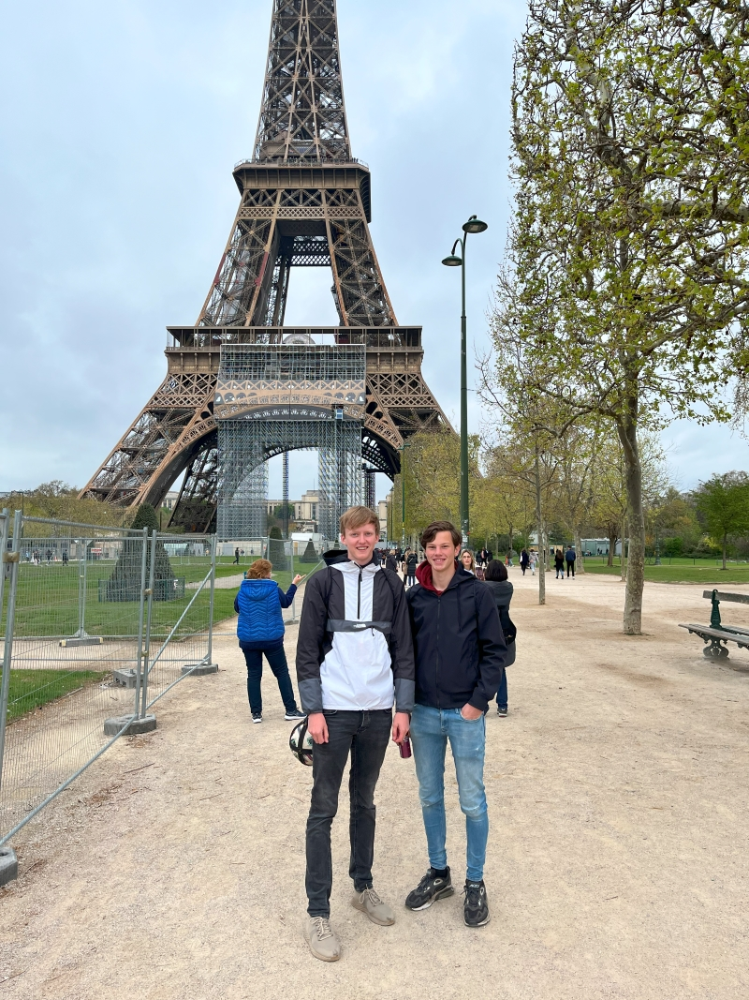
Na Parijs zijn we naar Spanje gegaan, maar we zijn later weer teruggekomen in Frankrijk. Op 24 april kwamen we 's nacht aan in Marseille. Vanaf het station moesten we nog 20 minuten lopen naar onze slaapplaats. Dit zou ik niet nog een keer doen in de nacht, want de wijk rondom het station van Marseille is geen beste plek. Dit wisten wij niet van tevoren, maar gelukkig is het allemaal goed gekomen. We zijn twee dagen in Marseille gebleven en we hebben aardig wat gedaan. De twee leukste dingen die we hebben gedaan in Marseille vond ik de stadiontour van de voetbalclub Olympique de Marseille en de wandelling naar de Basilique Notre Dame de la Garde waar je een enorm mooi uitzicht had over de hele stad.
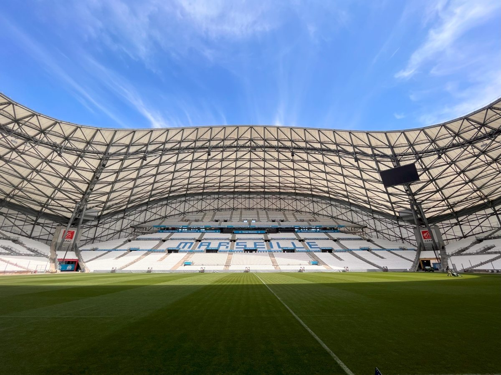
Na Marseille zijn we nog naar twee andere steden geweest in Frankrijk. Eentje daarvan was Annecy. In Annecy zijn we ook weer twee dagen geweest. Annecy is een prachtig stadje in de Franse Alpen, gelegen aan de oever van het mooie Lac d'Annecy. Het staat bekend om zijn schilderachtige grachten, middeleeuwse architectuur en kleurrijke marktplaatsen, wat het een populaire bestemming maakt voor toeristen. Daarnaast staat Annecy ook bekend als het "Venetië van de Alpen" vanwege zijn vergelijkbare grachten.
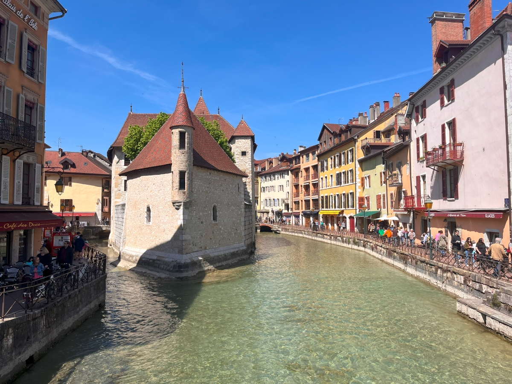
Op 28 april vertrokken we weer uit Annecy naar onze volgende en laatste bestemming in Frankrijk: Lyon. Hier zijn we iets meer dag een volle dag geweest waarin we zoveel mogelijk van de stad wilden zien. Daarom hebben we een lange wandeling gemaakt door Lyon die eindigde op een prachtig uitzichtpunt waar we zicht hadden op de hele stad.
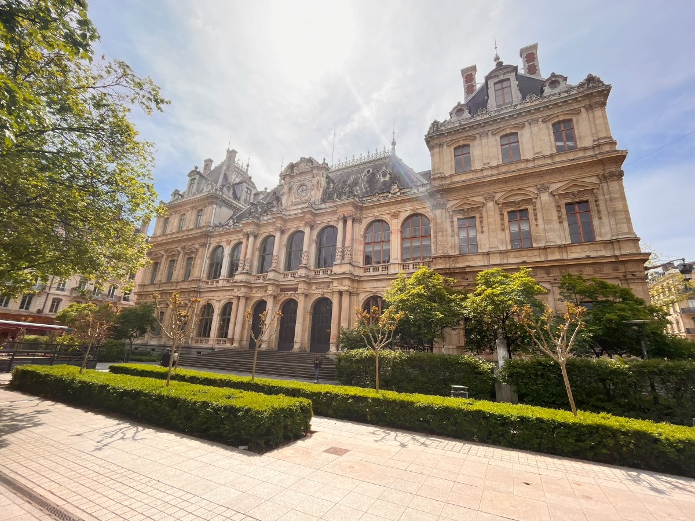
Spanje
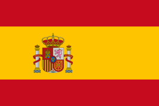
Na een lange treinreis kwamen we op 6 april aan in Spanje. In Spanje bezochten we vijf steden en de eerste was Barcelona. Barcelona is een levendige stad, bekend om zijn unieke architectuur en stranden, evenals de Catalaanse keuken. We zijn hier drie dagen verbleven en we hebben alles gezien wat we wilden zien van Barcelona, namelijk: de boulevard, Camp nou (het stadion van FC Barcelona), de Sagrada Familia en Parc De La Ciutadella.
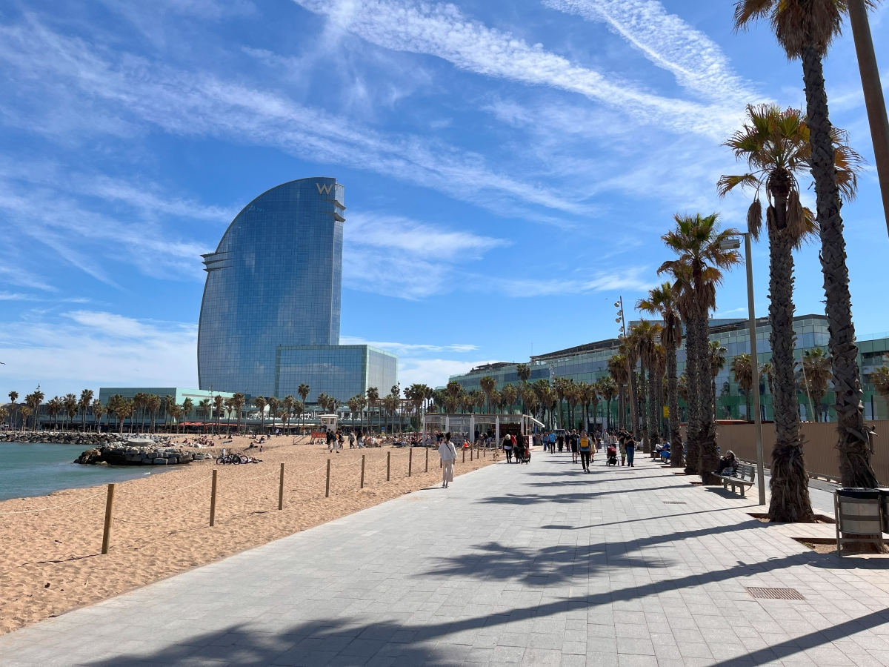
De volgende stad die we bezochten was de hoofdstad: Madrid. Toevallig was ik twee maanden daarvoor ook al in Madrid geweest, maar Reinier was er nog nooit eerder geweest dus ik kon hem al het een en ander vertellen over deze prachtige hoofdstad. We waren vooral in Madrid voor de voetbalwedstrijden. Natuurlijk hebben we ook stukken van de stad gezien, maar omdat ik er nog zo recent was geweest zijn we er niet al te lang gebleven.
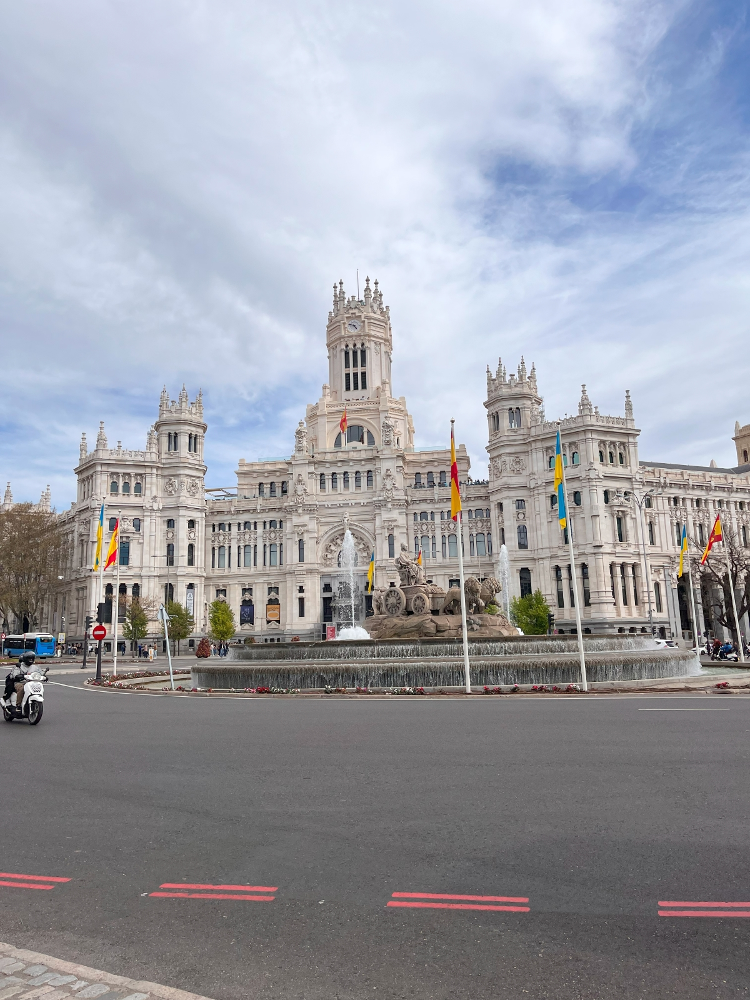
In Madrid kwamen we erachter dat er een nationale vakantie was in Spanje waardoor er heel weinig betaalbare hotels en hostels waren voor de komende nacht. Uiteindelijk hebben we wat kunnen vinden in Granada. We zijn er met moeite gekomen en we hadden er maar één dag. We zijn alleen even door het centrum gelopen en voor de rest zijn we vooral gaan uitrusten in ons hotel.
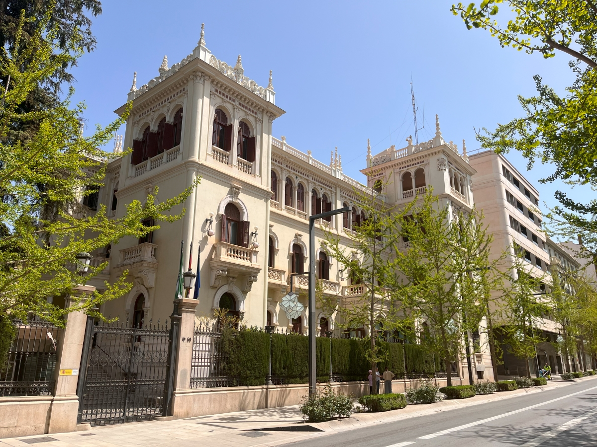
Na Granada gingen we naar een van mijn favoriete locaties: Sevilla. We waren er vlak voor Pasen dus de stad was helemaal versierd. Er was ook een paasoptocht die bekend staat als ‘’Semana Santa’’. Dit is een religieuze processie die gedurende de hele week voor Pasen plaatsvindt. Er waren mooie praalwagens en religieuze beelden te zien. Dit was erg indrukwekkend om mee te maken, we hadden ook helemaal geen idee van dit evenement omdat we pas in Madrid hadden bedacht dat we naar Sevilla wilden gaan zonder iets over deze stad op te zoeken.
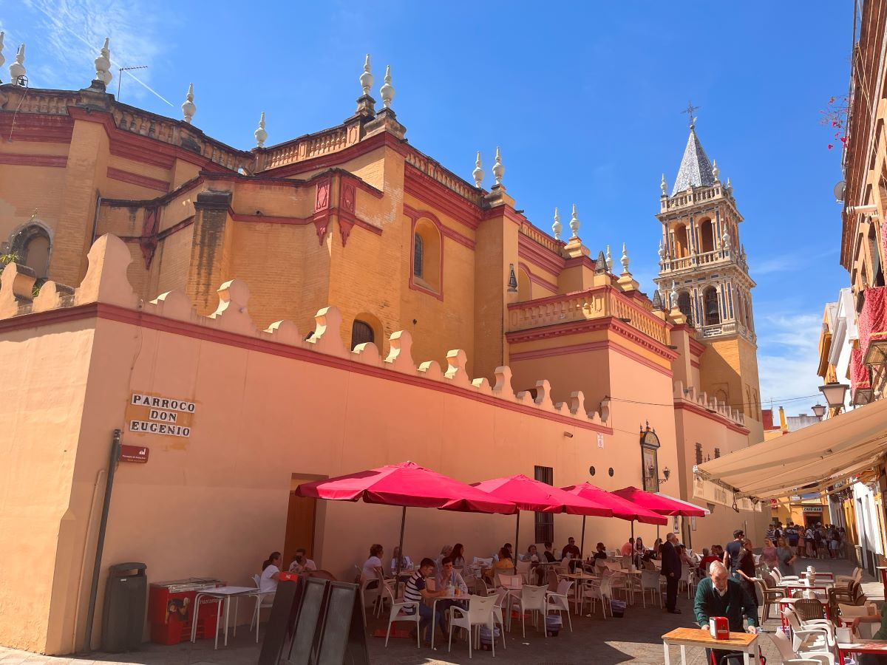
De volgende en laatste bestemming in Spanje was Valencia. Het weer zat hier helemaal niet mee en we hebben bijna alleen maar regen gezien. Gelukkig was het nog één middag droog in Valencia. We hebben toen het stadion van de voetbalclub uit Valencia bezocht en een wandeling door de stad gemaakt.
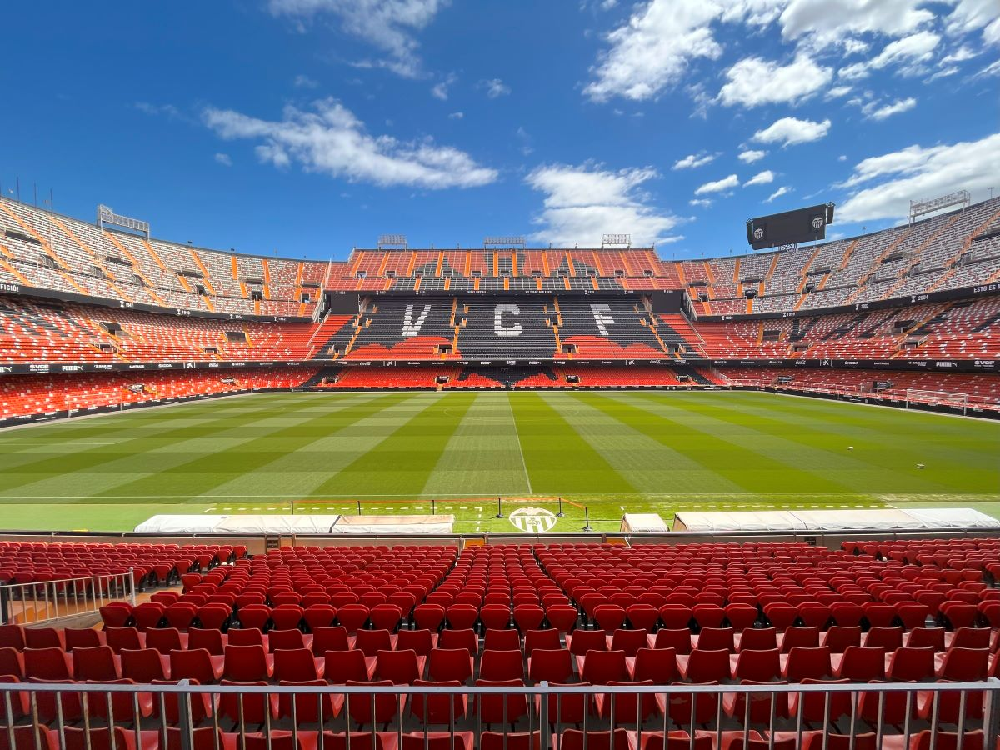
Zwitserland
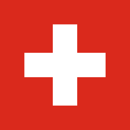
Vanaf Zwitserland kwam een derde persoon met ons meereizen (Sebastiaan). We hadden eigenlijk niet bedacht om naar Zwitserland te gaan maar Sebastiaan, die plotseling toch mee kon, had een huisje van zijn familie kunnen regelen waardoor we voor weinig geld vijf nachten konden slapen in een dorpje genaamd Alpes des Chaux in de bergen. We hebben genoten van de prachtige natuur van de Zwitserse Alpen. Het was erg rustig in onze omgeving. ’s Winters barst het er van de toeristen omdat het een populair skigebied is. Maar wij waren er begin mei dus er was nauwelijks iemand te bekennen. Dit vonden we eigenlijk wel fijn na al die dagen in drukke steden.
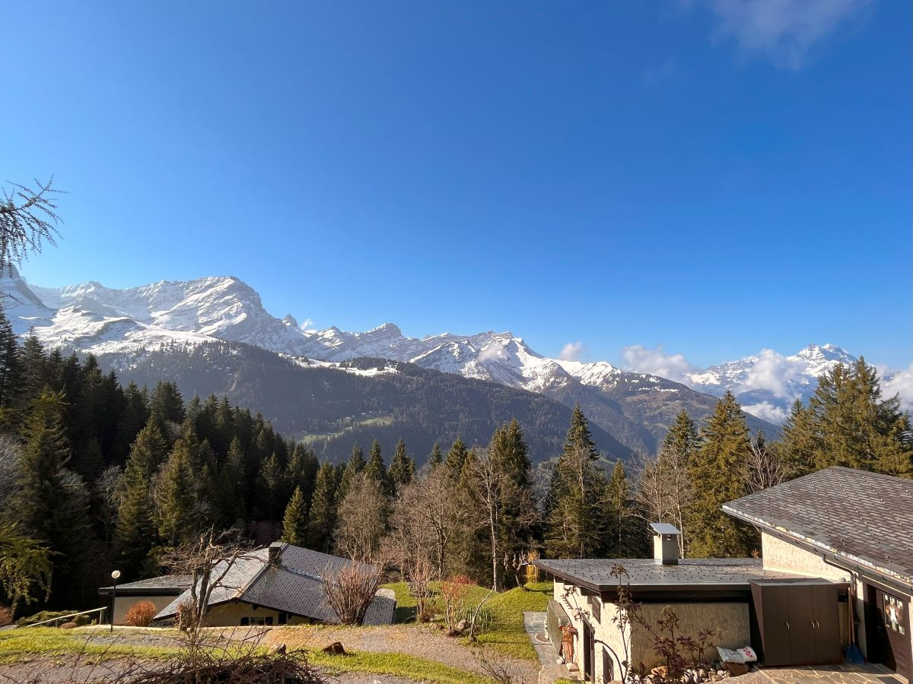
Italië
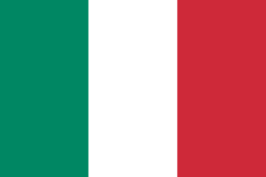
We hebben maar liefst 20 dagen doorgebracht in Italië. Italië is een van mijn favoriete vakantiebestemmingen en ik kom er al van jongs af aan met mijn ouders. We begonnen in Milaan, waar we twee dagen zijn gebleven. In Milaan hebben we van alles gedaan, maar het leukste vond ik de stadiontour in San Siro/Guiseppe Meazza en de voetbalwedstrijd van Inter Milaan die in datzelfde stadion plaats vond. Ook zijn we zoals het hoort in Italië een heerlijke pizza gaan eten. Dit was de eerste pizza die we aten in Italië maar zeker niet de laatste.
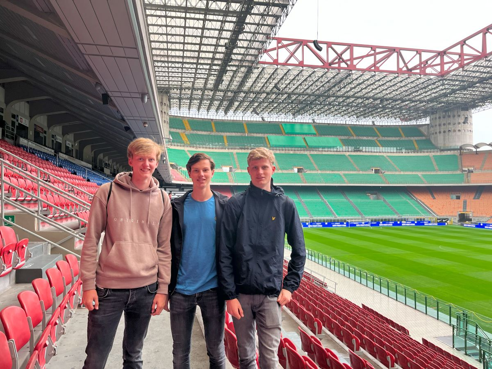
De volgende bestemming was Riomaggiore. Dit was mijn favoriete locatie van de hele reis. We zijn hier helaas maar twee dagen geweest. Het was gelukkig maar een klein dorpje dus we hebben zo goed als alles gezien. Op de pagina ‘’Top 3’’ zal een uitgebreidere uitleg staan over Riomaggiore.
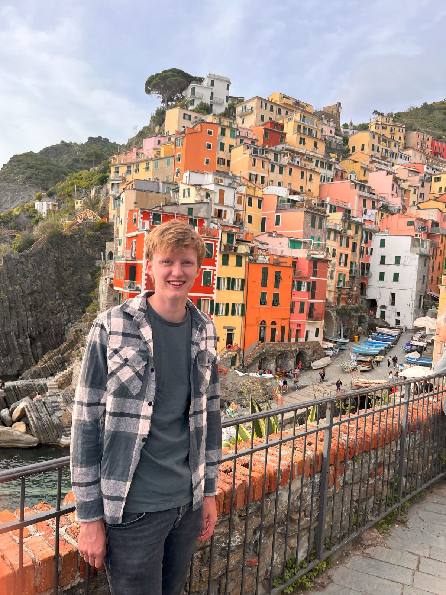
Na Riomaggiore zijn we mijn nicht gaan opzoeken in Rome die indertijd daar studeerde. We hebben twee nachtjes geslapen in Rome en we hebben zo veel mogelijk bezienswaardigheden gezien. De bekendste waar we binnen zijn geweest was het Colosseum. Het was iets te toeristisch in Rome dus we waren ook weer blij toen we vertrokken naar de volgende locatie.
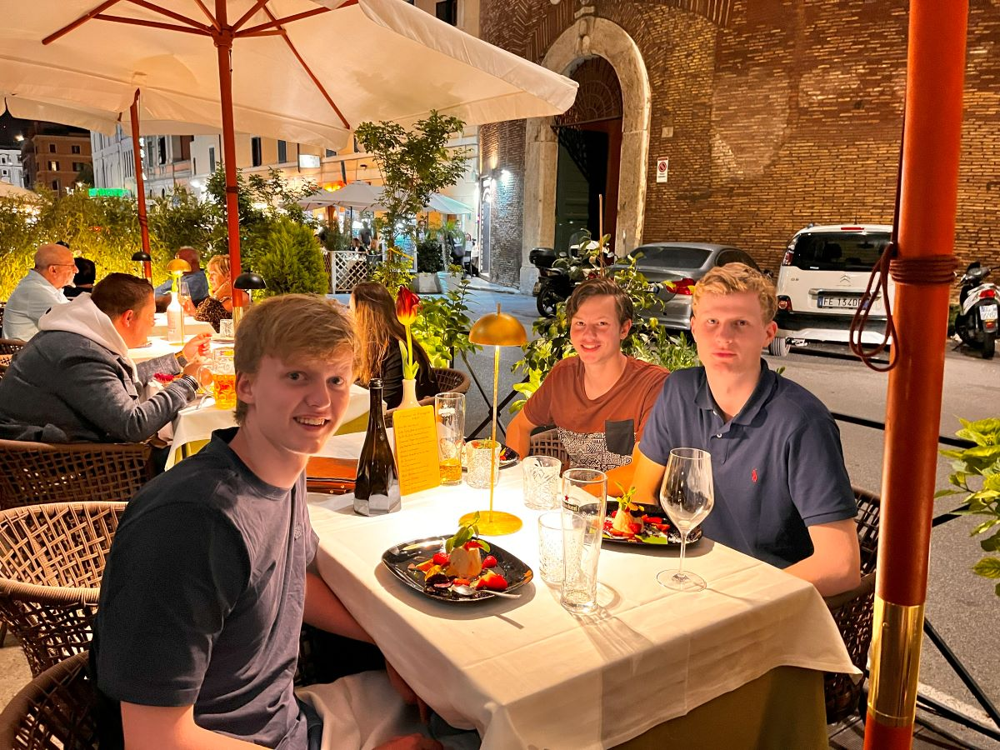
De volgende locatie was Napels. We verbleven hier in een dorpje buiten het centrum omdat er geen betaalbare hotels of hostels meer beschikbaar waren in het centrum. Onze eerste indruk van de stad was chaotisch, heel veel auto’s en scooters reden door elkaar door de smalle straten en je hoorde elke 10 seconden wel een toeter. Ook was het openbaar vervoer slecht geregeld. We hebben meerdere keren langer dan twee uur op een bus gewacht die elke half uur zou komen. Hierdoor hebben we helaas minder gezien van deze stad dan we van andere steden hadden gezien.
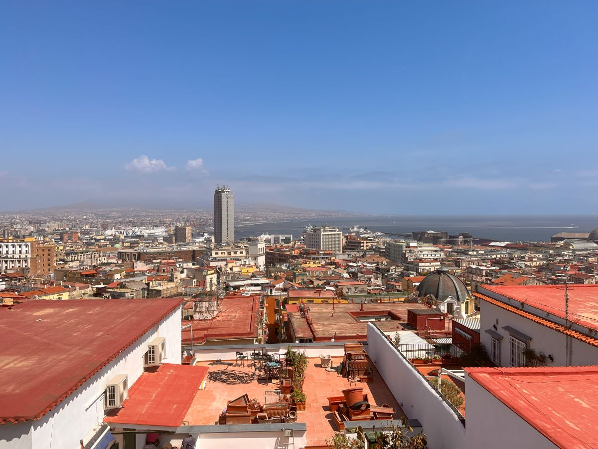
Tijdens ons verblijf in Napels zijn we één middagje naar Pompeï geweest. Pompeï was een oude Romeinse stad die in 79 na Christus werd bedolven onder vulkanische as en puin tijdens de uitbarsting van de Vesuvius. Het is beroemd vanwege de goed bewaard gebleven overblijfselen en biedt inzicht in het dagelijkse leven van de Romeinse tijd.
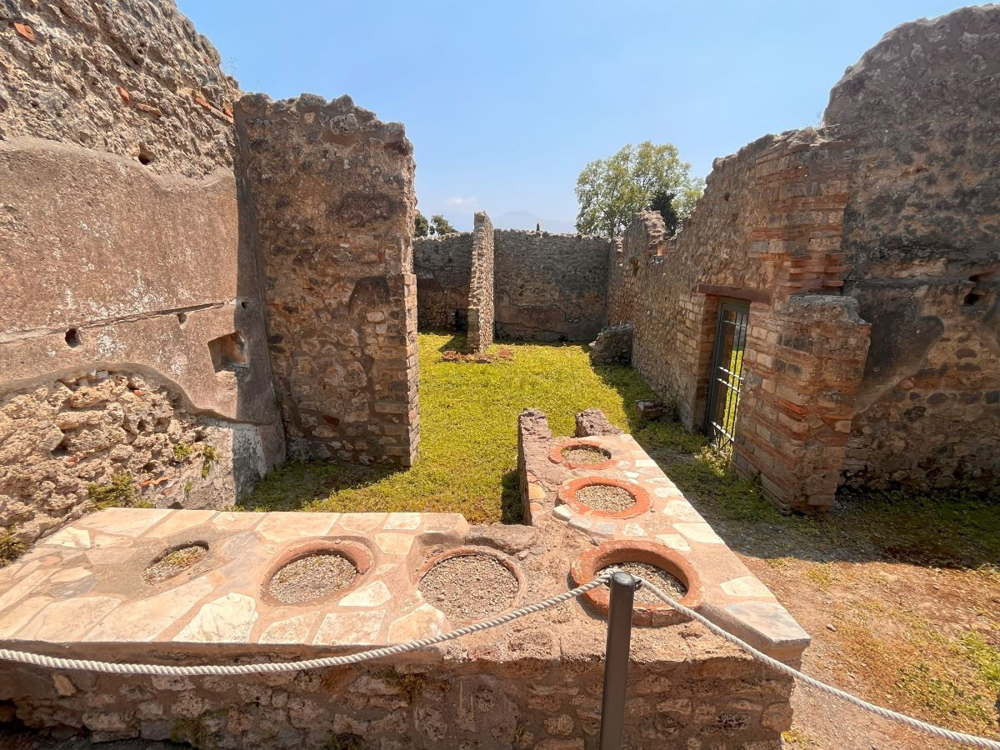
Onderweg naar onze volgende bestemming ‘’Monopoli’’ was er een ongeluk gebeurd op het spoor. Daardoor waren we gestrand in een stad genaamd Caserta. We hadden hier ongeveer vier uur totdat we onze reis konden vervolgen richting Monopoli. We zochten naar iets dat ons kon vermaken en zagen al snel een groot paleis. Het Koninklijk Paleis van Caserta in Italië is een groot barok paleis dat diende als koninklijke residentie en wordt vaak vergeleken met het Paleis van Versailles in Frankrijk. Zo hadden we geluk bij een ongeluk en hadden we toch weer wat interessants gezien.
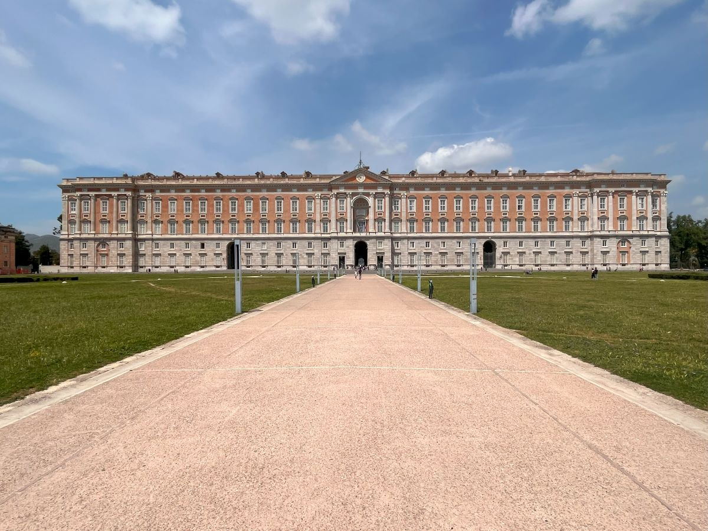
We hadden nog nooit van Monopoli gehoord maar we wilden graag verder naar het zuiden van Italië gaan en we hadden een goedkope slaapplek gevonden in het zuiden van Italië (in Monopoli). De eigenaar van de Airbnb waar we sliepen vertelde ons over een filmfestival die eens in het jaar plaatsvond in Monopoli. We zijn er naartoe gegaan en het was erg gezellig. De hele stad was verlicht en iedereen had zijn mooiste kleding aangetrokken. Het was enorm druk, maar het waren vooral de lokalen die er te vinden waren.
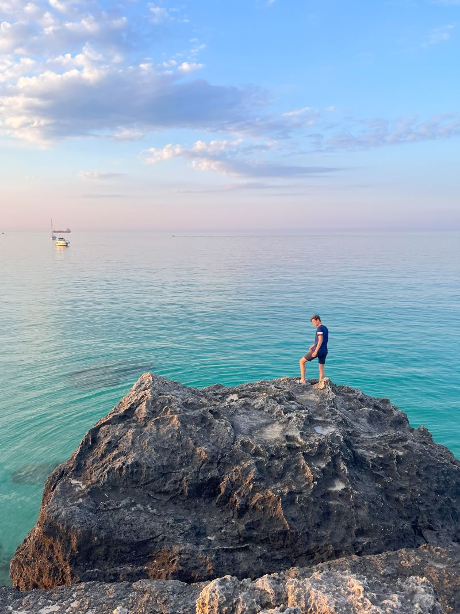
De volgende bestemming was Rimini. We waren hier maar één nacht, want we hadden eigenlijk alleen een tussenstop nodig op de weg naar Venetië. Rimini was niet zo’n succes. Het was erg rustig en er was nauwelijks wat te zien. Gelukkig waren we er snel weer weg.
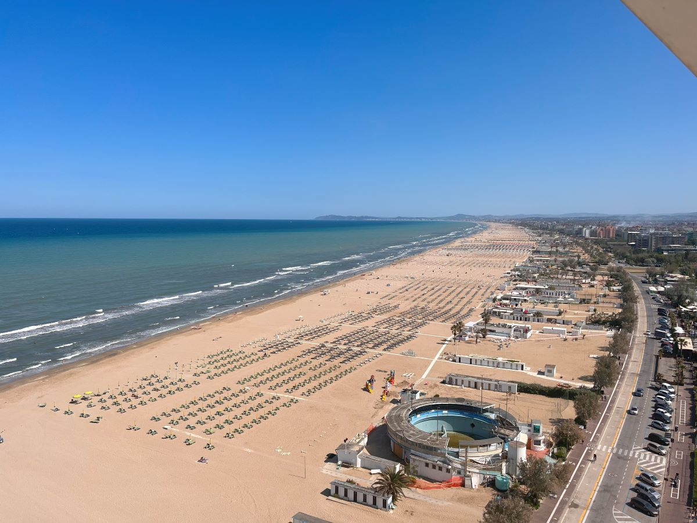
Op 19 mei kwamen we aan op onze een na laatste bestemming van Italië, dit was Venetië. Het was hier enorm druk zoals gewoonlijk. We sliepen hier twee nachten maar aan slapen zijn we nauwelijks toegekomen. We hadden een hostel geboekt voor €40 per nacht en we moesten een kamer delen met ongeveer 30 andere mensen. Het was ook nog is boven de 35 graden dus je kan wel snappen dat we niet echt geslapen hebben. Venetië zelf was gelukkig heel gezellig, we hebben veel door de stad geslenterd en we hebben er heerlijk gegeten.
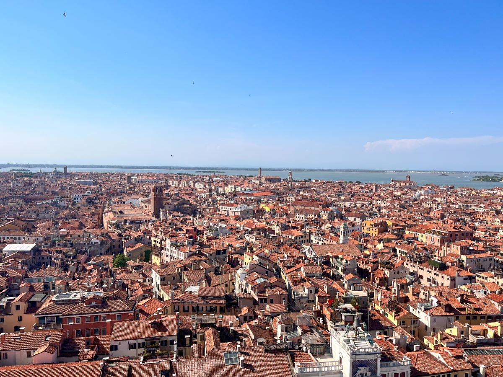
Voordat we Italië weer uit gingen, wilden we nog van wat rust genieten in de natuur. Daarom hebben we nog twee nachten op een camping geslapen in het noorden van Italië. Het dorpje waar we verbleven heet Dormeletto en het ligt aan Lago Maggiore. We hebben daar goed uitgerust, dat was ook wel nodig aangezien we een ontzettend lange reis op de planning hadden.
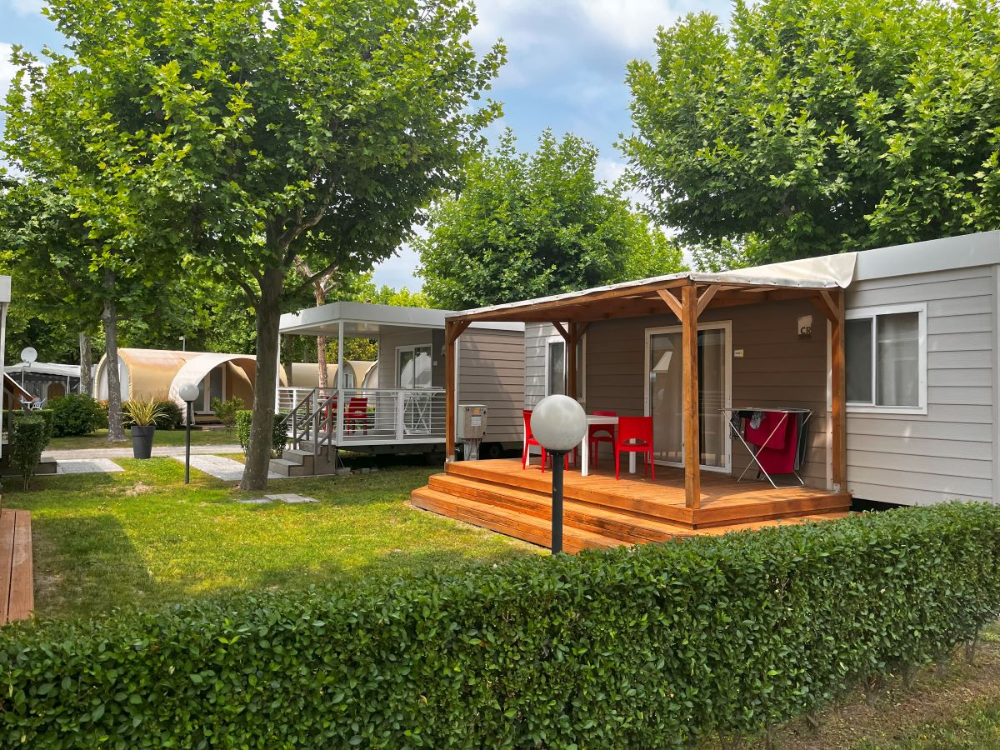
Vaticaanstad
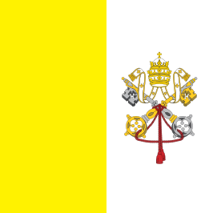
Tijdens ons verblijf in Italië zijn we één middag naar Vaticaanstad geweest. Vaticaanstad is de kleinste onafhankelijke staat ter wereld en ligt binnen Rome. Het is de plek waar de paus woont, de leider van de rooms-katholieke kerk. De Sint-Pietersbasiliek en de Vaticaanse Musea zijn de bekendste bezienswaardigheden en de hele staat is erg klein, slechts 44 hectare groot.
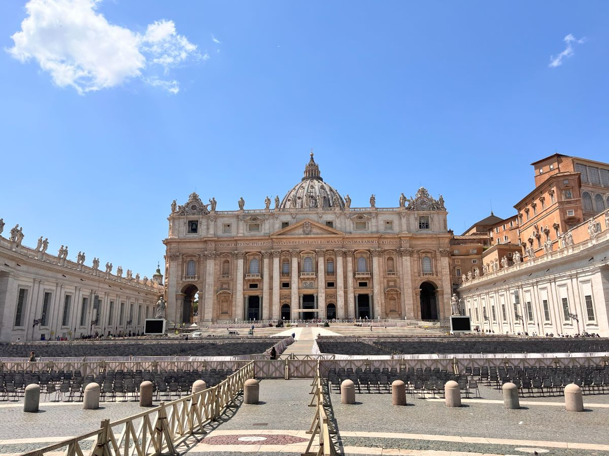
Kroatië
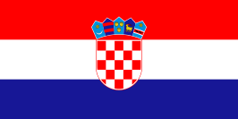
Nadat we meer dan een halve maand in Italië waren geweest, vervolgden we onze reis van Dormelletto naar Zagreb. Deze treinreis duurde in totaal zo’n 20 uur. Eenmaal aangekomen in Zagreb waren we gelijk ons bed in gedoken, want we waren helemaal gesloopt van de treinreis. De dag dat we aankwamen in Zagreb zagen en hoorden we verschillende grote groepen kinderen fluiten op fluitjes. We hadden opgezocht waarom ze dit deden. Dit doen ze één keer per jaar, wanneer de kinderen de overstap maken van de lagere school naar de middelbare school. Het was geinig om te zien maar vooral erg irritant.
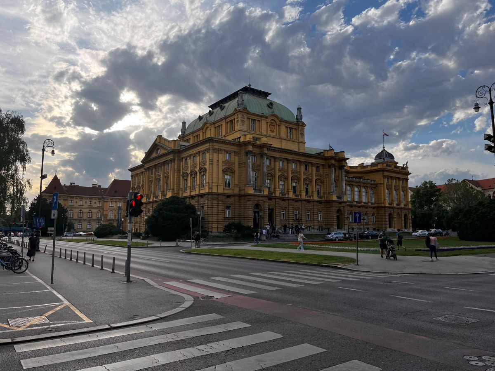
De tweede locatie waar we naartoe gingen in Kroatië was Split gelegen in het zuiden van Kroatië. We hadden daar ook weer wat speciaals meegemaakt. Hajduk Split (de voetbalclub uit Split) had voor het eerst in 10 jaar de beker gewonnen. Het was daarom een feest in Split met veel muziek en vuurwerk. Voor de rest hebben we in de vier dagen dat we in Split verbleven niet zo veel van de omgeving gezien, maar wel veel van het nachtleven.
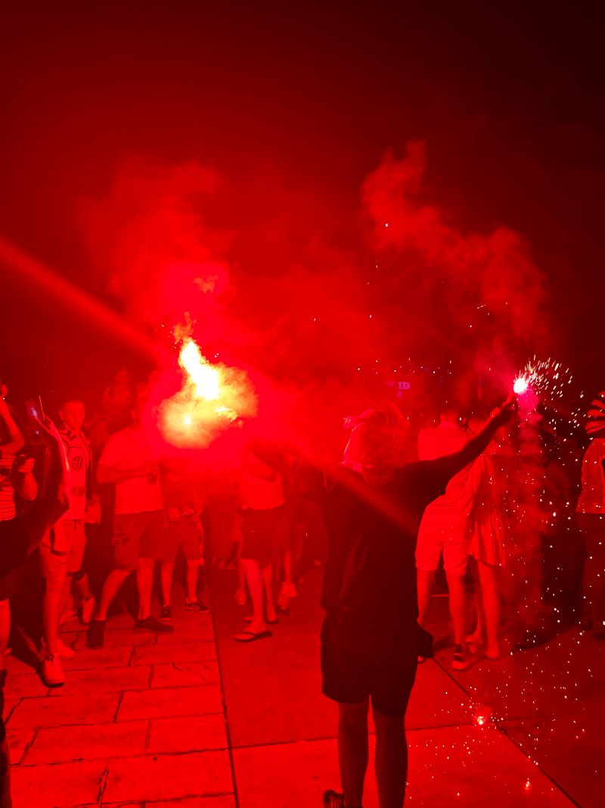
Vanaf Split hebben we een bus genomen van ongeveer 6 uur naar de Plitvicemeren. De Plitvicemeren zijn een prachtig natuurgebied in Kroatië, bekend om hun heldere blauwe meren en watervallen. Het is een populaire plek voor natuurliefhebbers en toeristen om te wandelen en de mooie natuur te bewonderen. We hebben hier twee dagen geslapen bij een oude vrouw die een airbnb heeft. Ze was heel gastvriendelijk alleen ging het communiceren wat lastig. Ze sprak geen Engels, maar wel een beetje Duits gelukkig.
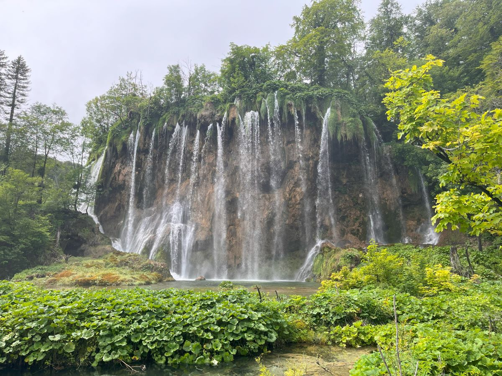
Hongarije
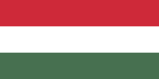
Het einde van de reis was alweer in zicht. Met nog acht dagen te gaan verbleven we van 1 tot 2 juni in Boedapest. We zijn hier naar een van de badhuizen geweest. De badhuizen in Boedapest zijn beroemd om hun thermale bronnen en ontspannende baden. Ze vormen een belangrijk onderdeel van de cultuur en worden vaak bezocht door zowel lokale bewoners als toeristen die willen genieten van het warme water.
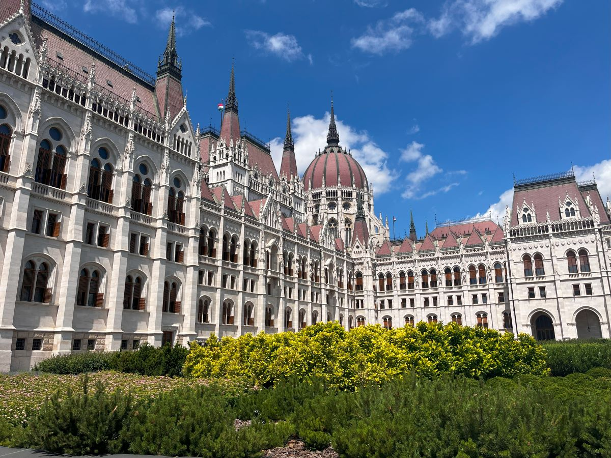
Oostenrijk
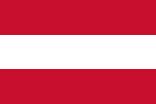
In Oostenrijk zijn we naar Wenen geweest. We zijn hier maar één dag geweest. We hebben een stadswandeling gemaakt en we zijn naar de kermis geweest. De kermis in Wenen is een levendig evenement dat jaarlijks plaatsvindt in het Prater Park, bekend om zijn enorme reuzenrad. Het biedt verschillende attracties, van traditionele draaimolens tot moderne achtbanen, en trekt zowel lokale bezoekers als toeristen die willen genieten van de kermis.
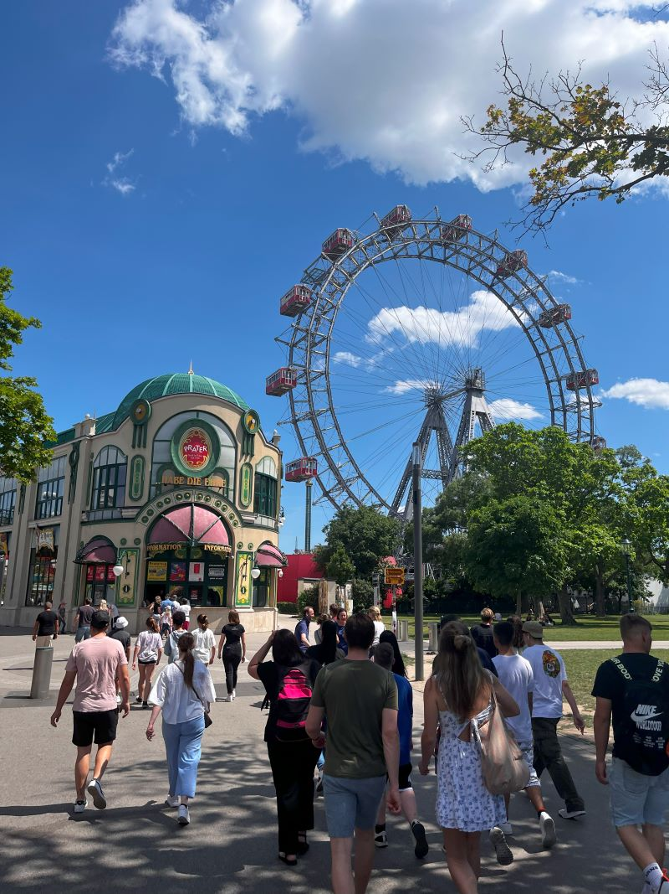
Tsjechië
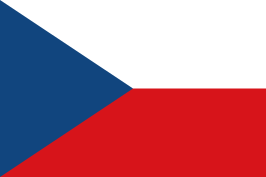
Het een na laatste land waar we naartoe zijn gereisd was Tsjechië. Hier hebben we één nacht geslapen in Praag. We hebben hier weer een lange stadwandeling gedaan zoals we in bijna elke andere grote stad hebben gedaan. Ook hebben we een waterfiets gehuurd en hebben we twee uur lang op de Moldau gevaren. We vonden het opvallend hoeveel beverratten er waren. Ze waren erg tam en veel toeristen waren ze aan het voeren.
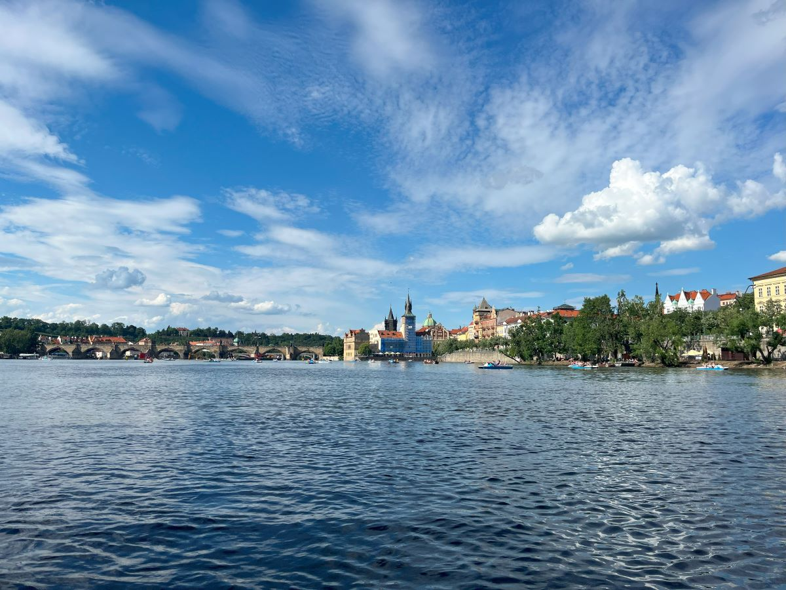
Duitsland
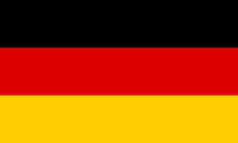
Op 7 juni kwamen we aan op onze allerlaatste locatie van onze Interrail reis. Dit was Berlijn, de hoofdstad van Duitsland. Op 8 juni was er een aanslag in Berlijn, waar we erg geschrokken van waren. Een personenauto was op een groep scholieren ingereden. Gelukkig waren we niet in de buurt, maar we hebben erg veel politie gezien die dag en de sfeer was niet heel prettig. Het was jammer dat we zo de reis af moesten sluiten, maar we hebben het alsnog erg leuk gehad gedurende de reis en het was een ervaring die we nooit zullen vergeten.
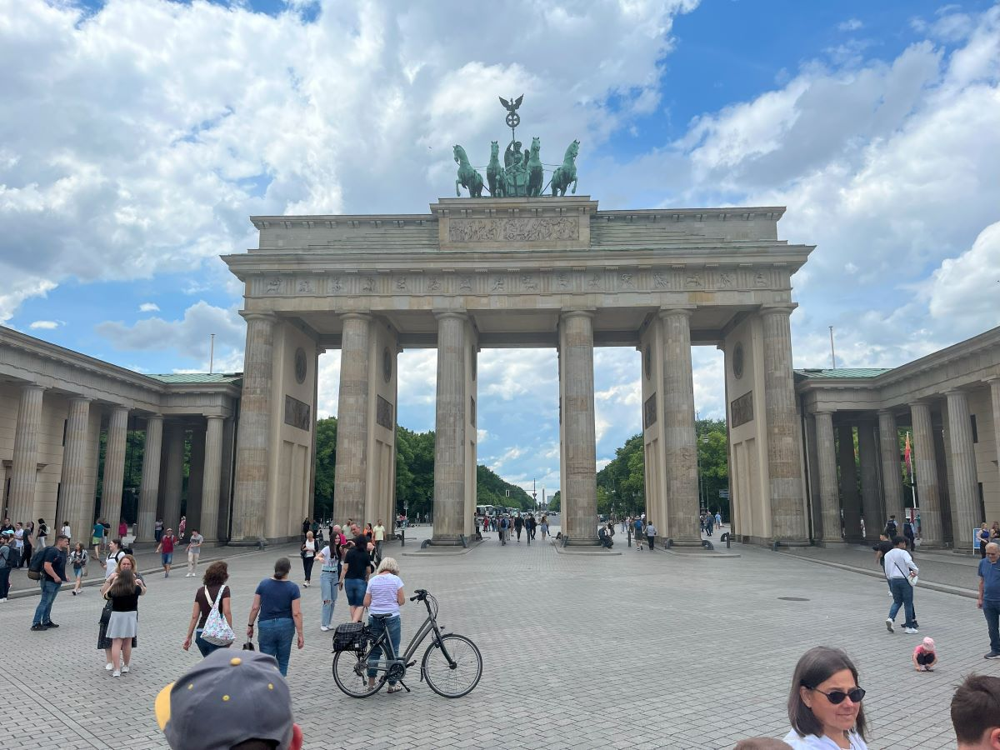